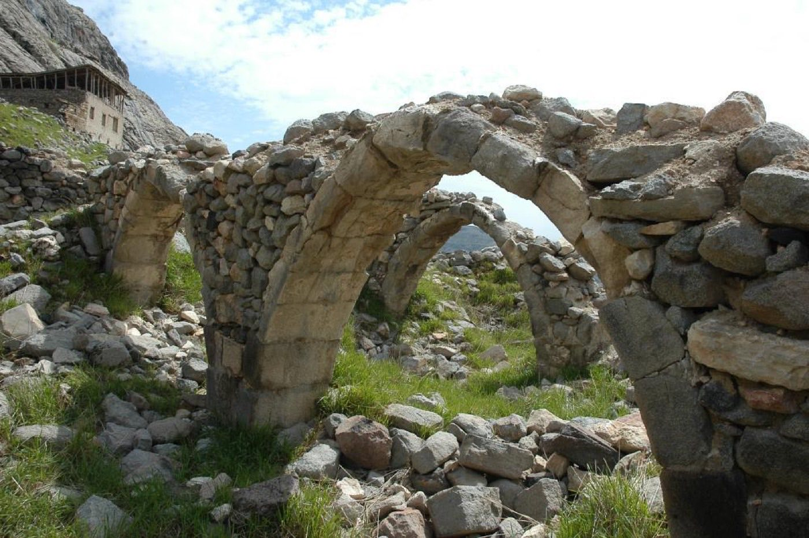
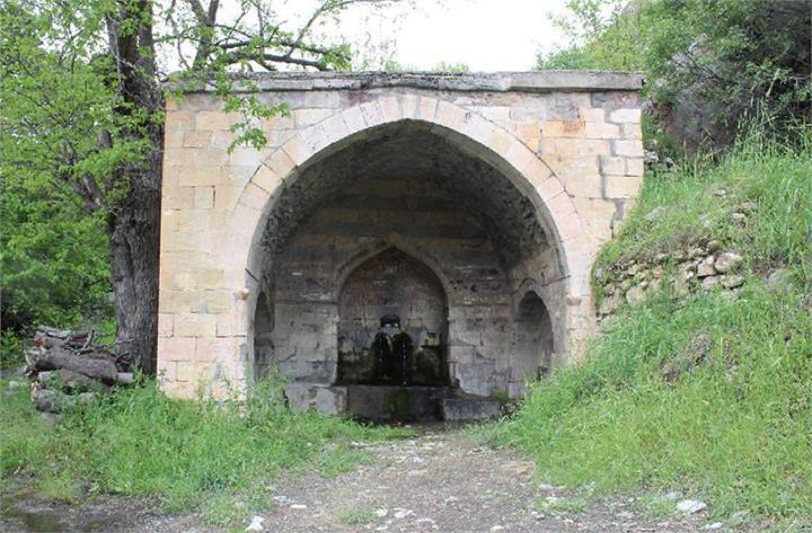
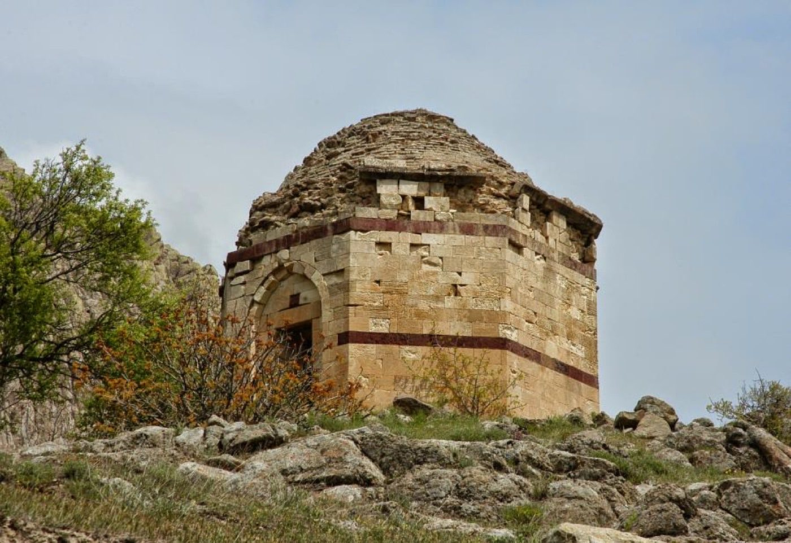
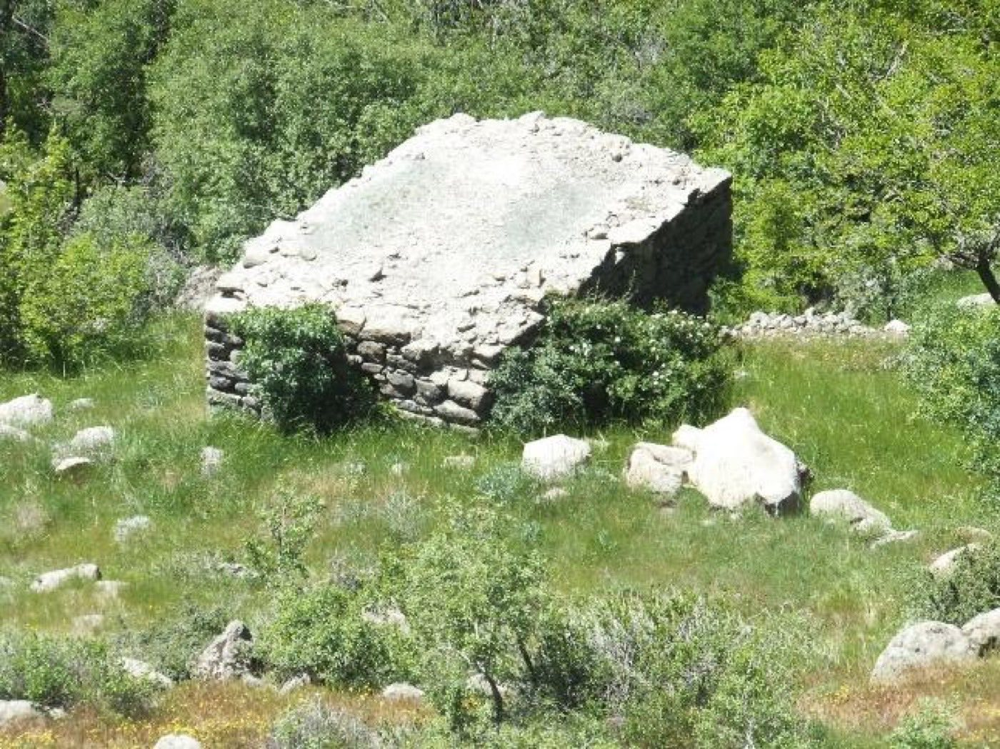
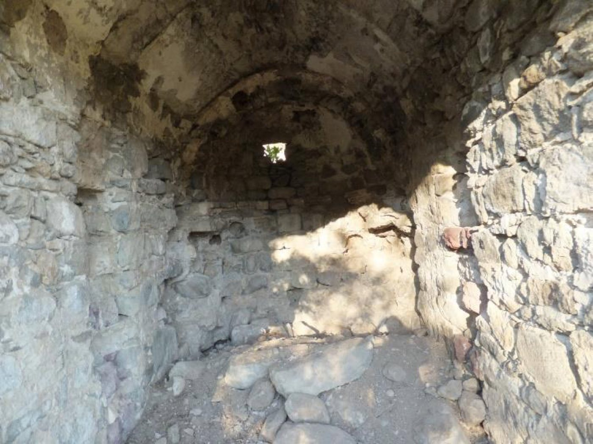
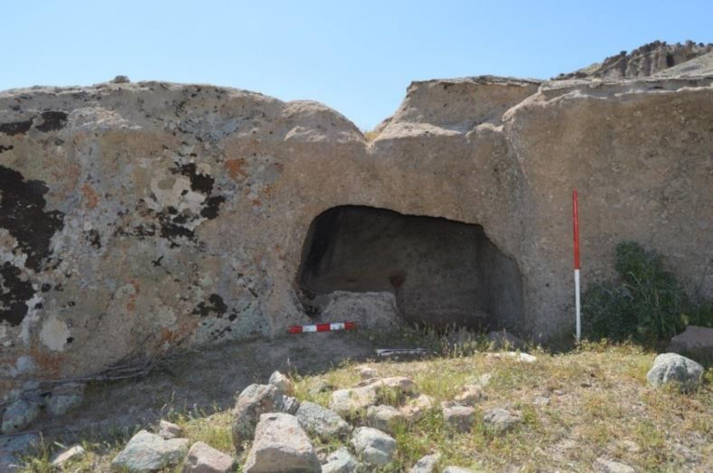
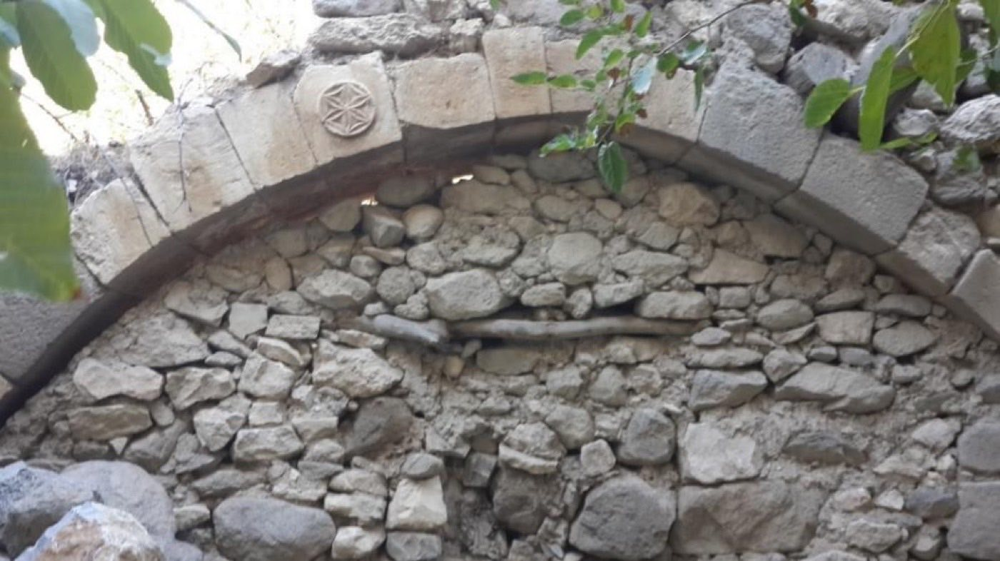

Osmanlı döneminde şekillenen Ulukale'nin tarihsel dokusu; ibadethaneler, kamusal yapılar ve kerpiç konaklardan oluşan zengin bir bütündür. Aşağıdaki yapıların çoğu bugün hâlâ — kimi sağlam, kimi kalıntı halinde — ayaktadır.
Yuvarlak kemerleriyle dikkat çeken cami duvarları, Osmanlı dönemi yapı geleneğinin köydeki en belirgin izlerinden biri. Kemerli açıklıklar bugün de ayakta.
Köyün çok inançlı geçmişinin tanığı. Cami ve kilisenin aynı yerleşimde yan yana var olması, Ulukale'nin kültürel katmanlılığını gösterir.
1550-51'de tamamlanan, sekizgen planlı kesme taş türbe. İlk Çemişgezek Sancakbeyi Pir Hüseyin Bey'in oğlu Ferruhşad Bey burada yatar; yapı yakın zamanda restore edildi.
Tarihî zamanlardan bugüne hâlâ ayakta duran çeşme, köy hayatının kalbiydi — suyun, sohbetin ve günlük buluşmaların merkezi.
Bir nahiye merkezi olmanın göstergelerinden biri olan hamam, köyün kamusal yaşamının ve refahının izini taşır.
Vadinin suyuyla dönen değirmen, köyün ekonomik belleğinin parçası. Tahıl burada una, emek burada ekmeğe dönüşürdü.
Helenistik–Roma dönemine tarihlenen kaya mezarı, köyün antik geçmişinin en somut kanıtı. Kayaya oyulmuş bu yapı binlerce yıllık.
Ahşap pencereli, toprak damlı kerpiç evler ve tarihî konaklar köyün sivil mimari dokusunu oluşturur. Her ev bir ailenin hikâyesi.
Mimari olmasa da köyün peyzajının ayrılmaz parçası. Dut yetiştiriciliği bugün hâlâ köylülerin başlıca geçim kaynağı.
Yapıların bir kısmı bugün hâlâ — kimi sağlam, kimi kalıntı halinde — duruyor. Aşağıdaki kareler bu yapıları belgeliyor.







Fotoğraflar bu yayınlardan derlenmiştir; telif hakları ilgili yazar ve kurumlara aittir. Hak sahibi olarak kaldırılmasını isterseniz bize ulaşın.